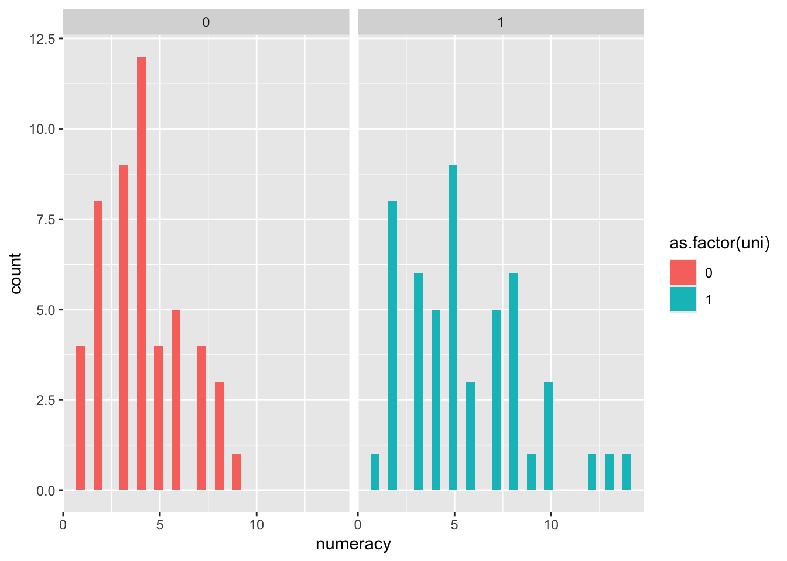

Chapter 8 Tests of Equality of variances
Most parametric test require that when testing differences among groups, these have more or less the same variance around the mean.
The Levene’s test is a test of the null hypothesis that the variances in the different groups are equal. The test is based on the absolute deviations of the observations from the group means. The test is considered to be robust against departures from normality, but it is sensitive to the presence of outliers.
8.0.1 The F-test of equality of variance
The F-test is a test of the null hypothesis that the variances in the different groups are equal. The test is based on the ratio of the variances in the different groups. This test is EXTREMELY sensitive to non-normality and outliers. Consequently the F-test is considered to be less robust than the Levene’s test, Bartlett’s test or the Brown-Forsythe test .
Sokal, R. R., Rohlf, F. J. (1995). Biometry: The Principles and Practice of Statistics in Biological Research. W. H. Freeman and Company
\[F=s_x^2/s_y^2\], where \(s_x^2\) and \(s_y^2\) are the variances of the two groups, and x is the variance of the group with the larger variance.
##
## F test to compare two variances
##
## data: dlf$day1 and dlf$day2
## F = 1.7171, num df = 809, denom df = 263, p-value = 3.23e-07
## alternative hypothesis: true ratio of variances is not equal to 1
## 95 percent confidence interval:
## 1.402898 2.080705
## sample estimates:
## ratio of variances
## 1.7170928.0.2 Bartlett’s test of equality of variance
Bartlett’s test is a test of the null hypothesis that the variances in the different groups are equal. The test is based on the absolute deviations of the observations from the group means. The test is considered to be robust against departures from normality, but it is sensitive to the presence of outliers.
Bartlett, M. S. (1937). Properties of sufficiency and statistical tests. Proceedings of the Royal Society of London Series A 160, 268–282. doi:10.1098/rspa.1937.0109.
Note: that the data needs to be manipulated so it appear in in the long form
subset(dlf, select = c("day1", "day2")) -> dlfsub # create a subset of the data you need
dlfsub1 <- stack(dlfsub) # reorganize the data in the long form
dlfsub1 # the data is now in the long form## values ind
## 1 2.64 day1
## 2 0.97 day1
## 3 0.84 day1
## 4 3.03 day1
## 5 0.88 day1
## 6 0.85 day1
## 7 1.56 day1
## 8 3.02 day1
## 9 2.29 day1
## 10 1.11 day1
## 11 2.17 day1
## 12 0.82 day1
## 13 1.41 day1
## 14 1.76 day1
## 15 1.38 day1
## 16 2.79 day1
## 17 1.50 day1
## 18 1.91 day1
## 19 2.32 day1
## 20 2.05 day1
## 21 2.17 day1
## 22 2.05 day1
## 23 1.61 day1
## 24 1.66 day1
## 25 2.30 day1
## 26 2.76 day1
## 27 1.44 day1
## 28 1.06 day1
## 29 3.23 day1
## 30 0.97 day1
## 31 2.57 day1
## 32 0.26 day1
## 33 0.47 day1
## 34 1.73 day1
## 35 1.94 day1
## 36 1.91 day1
## 37 2.08 day1
## 38 1.91 day1
## 39 1.42 day1
## 40 1.50 day1
## 41 0.11 day1
## 42 1.67 day1
## 43 2.08 day1
## 44 2.05 day1
## 45 2.00 day1
## 46 1.52 day1
## 47 1.58 day1
## 48 1.28 day1
## 49 1.88 day1
## 50 1.32 day1
## 51 2.09 day1
## 52 2.00 day1
## 53 2.64 day1
## 54 0.85 day1
## 55 2.47 day1
## 56 1.79 day1
## 57 1.64 day1
## 58 1.32 day1
## 59 2.97 day1
## 60 1.44 day1
## 61 2.02 day1
## 62 1.79 day1
## 63 1.34 day1
## 64 2.29 day1
## 65 1.66 day1
## 66 0.60 day1
## 67 1.76 day1
## 68 1.50 day1
## 69 2.08 day1
## 70 1.00 day1
## 71 1.73 day1
## 72 1.05 day1
## 73 2.81 day1
## 74 1.52 day1
## 75 1.47 day1
## 76 2.64 day1
## 77 2.20 day1
## 78 0.55 day1
## 79 2.29 day1
## 80 2.00 day1
## 81 2.23 day1
## 82 2.45 day1
## 83 1.20 day1
## 84 2.91 day1
## 85 1.14 day1
## 86 1.88 day1
## 87 0.94 day1
## 88 1.85 day1
## 89 2.58 day1
## 90 0.61 day1
## 91 0.70 day1
## 92 1.38 day1
## 93 1.94 day1
## 94 2.29 day1
## 95 1.59 day1
## 96 2.46 day1
## 97 1.67 day1
## 98 2.02 day1
## 99 1.50 day1
## 100 2.70 day1
## 101 1.61 day1
## 102 2.29 day1
## 103 0.97 day1
## 104 1.85 day1
## 105 2.76 day1
## 106 1.64 day1
## 107 1.17 day1
## 108 1.57 day1
## 109 2.23 day1
## 110 2.05 day1
## 111 2.05 day1
## 112 2.94 day1
## 113 2.39 day1
## 114 1.94 day1
## 115 2.12 day1
## 116 1.11 day1
## 117 0.97 day1
## 118 1.35 day1
## 119 2.81 day1
## 120 2.50 day1
## 121 1.87 day1
## 122 1.33 day1
## 123 1.26 day1
## 124 1.44 day1
## 125 0.55 day1
## 126 1.75 day1
## 127 2.08 day1
## 128 0.85 day1
## 129 2.52 day1
## 130 3.00 day1
## 131 1.41 day1
## 132 1.08 day1
## 133 1.20 day1
## 134 1.94 day1
## 135 2.26 day1
## 136 1.41 day1
## 137 2.50 day1
## 138 2.17 day1
## 139 1.82 day1
## 140 1.44 day1
## 141 1.66 day1
## 142 1.82 day1
## 143 1.26 day1
## 144 2.67 day1
## 145 1.47 day1
## 146 1.84 day1
## 147 2.58 day1
## 148 1.73 day1
## 149 1.23 day1
## 150 2.32 day1
## 151 2.67 day1
## 152 1.02 day1
## 153 1.66 day1
## 154 1.88 day1
## 155 1.91 day1
## 156 1.64 day1
## 157 1.34 day1
## 158 1.85 day1
## 159 2.08 day1
## 160 1.02 day1
## 161 1.79 day1
## 162 1.94 day1
## 163 3.26 day1
## 164 1.14 day1
## 165 1.50 day1
## 166 2.03 day1
## 167 2.24 day1
## 168 1.11 day1
## 169 2.21 day1
## 170 1.94 day1
## 171 2.41 day1
## 172 0.88 day1
## 173 1.17 day1
## 174 2.23 day1
## 175 1.64 day1
## 176 2.14 day1
## 177 0.11 day1
## 178 2.17 day1
## 179 1.67 day1
## 180 1.00 day1
## 181 0.88 day1
## 182 2.20 day1
## 183 2.17 day1
## 184 2.32 day1
## 185 1.64 day1
## 186 3.00 day1
## 187 2.38 day1
## 188 1.60 day1
## 189 1.58 day1
## 190 2.61 day1
## 191 1.44 day1
## 192 1.57 day1
## 193 2.32 day1
## 194 1.14 day1
## 195 1.93 day1
## 196 2.47 day1
## 197 2.29 day1
## 198 1.00 day1
## 199 1.58 day1
## 200 2.44 day1
## 201 0.83 day1
## 202 2.71 day1
## 203 1.73 day1
## 204 1.58 day1
## 205 1.50 day1
## 206 1.05 day1
## 207 2.05 day1
## 208 2.63 day1
## 209 2.55 day1
## 210 2.00 day1
## 211 2.00 day1
## 212 1.32 day1
## 213 3.14 day1
## 214 1.44 day1
## 215 1.85 day1
## 216 1.41 day1
## 217 1.94 day1
## 218 2.91 day1
## 219 1.85 day1
## 220 1.70 day1
## 221 2.23 day1
## 222 1.11 day1
## 223 1.47 day1
## 224 2.20 day1
## 225 1.82 day1
## 226 1.42 day1
## 227 2.44 day1
## 228 2.66 day1
## 229 1.52 day1
## 230 1.35 day1
## 231 1.29 day1
## 232 2.32 day1
## 233 0.78 day1
## 234 2.84 day1
## 235 0.97 day1
## 236 1.52 day1
## 237 1.70 day1
## 238 0.94 day1
## 239 1.41 day1
## 240 1.79 day1
## 241 1.08 day1
## 242 1.47 day1
## 243 1.79 day1
## 244 2.00 day1
## 245 0.76 day1
## 246 2.20 day1
## 247 0.94 day1
## 248 1.38 day1
## 249 1.38 day1
## 250 0.32 day1
## 251 2.58 day1
## 252 0.51 day1
## 253 0.32 day1
## 254 0.91 day1
## 255 1.51 day1
## 256 1.47 day1
## 257 2.50 day1
## 258 2.26 day1
## 259 2.81 day1
## 260 1.87 day1
## 261 2.00 day1
## 262 2.23 day1
## 263 2.00 day1
## 264 1.41 day1
## 265 1.64 day1
## 266 1.64 day1
## 267 1.26 day1
## 268 1.52 day1
## 269 2.44 day1
## 270 2.18 day1
## 271 3.02 day1
## 272 1.02 day1
## 273 2.88 day1
## 274 1.54 day1
## 275 1.64 day1
## 276 2.44 day1
## 277 1.29 day1
## 278 1.61 day1
## 279 1.77 day1
## 280 0.91 day1
## 281 0.85 day1
## 282 0.85 day1
## 283 1.50 day1
## 284 1.05 day1
## 285 3.38 day1
## 286 1.42 day1
## 287 1.85 day1
## 288 1.91 day1
## 289 0.82 day1
## 290 1.32 day1
## 291 2.23 day1
## 292 1.47 day1
## 293 2.70 day1
## 294 1.58 day1
## 295 1.00 day1
## 296 1.44 day1
## 297 2.00 day1
## 298 1.60 day1
## 299 2.32 day1
## 300 3.41 day1
## 301 2.02 day1
## 302 0.64 day1
## 303 3.58 day1
## 304 1.50 day1
## 305 1.08 day1
## 306 1.52 day1
## 307 1.26 day1
## 308 1.68 day1
## 309 1.47 day1
## 310 1.47 day1
## 311 1.67 day1
## 312 2.47 day1
## 313 1.82 day1
## 314 2.17 day1
## 315 3.21 day1
## 316 1.60 day1
## 317 0.32 day1
## 318 0.55 day1
## 319 1.42 day1
## 320 1.14 day1
## 321 2.64 day1
## 322 2.58 day1
## 323 2.02 day1
## 324 2.00 day1
## 325 2.90 day1
## 326 1.82 day1
## 327 0.50 day1
## 328 1.53 day1
## 329 2.48 day1
## 330 2.05 day1
## 331 2.52 day1
## 332 1.88 day1
## 333 2.73 day1
## 334 2.88 day1
## 335 1.67 day1
## 336 1.93 day1
## 337 1.67 day1
## 338 1.20 day1
## 339 2.75 day1
## 340 1.94 day1
## 341 0.59 day1
## 342 1.50 day1
## 343 1.58 day1
## 344 2.23 day1
## 345 2.35 day1
## 346 2.55 day1
## 347 1.55 day1
## 348 2.31 day1
## 349 2.23 day1
## 350 0.67 day1
## 351 2.51 day1
## 352 1.08 day1
## 353 2.44 day1
## 354 0.23 day1
## 355 2.17 day1
## 356 1.90 day1
## 357 1.67 day1
## 358 2.00 day1
## 359 2.44 day1
## 360 1.44 day1
## 361 0.82 day1
## 362 2.50 day1
## 363 1.82 day1
## 364 1.97 day1
## 365 2.52 day1
## 366 0.05 day1
## 367 2.08 day1
## 368 2.39 day1
## 369 1.45 day1
## 370 2.58 day1
## 371 2.12 day1
## 372 2.02 day1
## 373 1.78 day1
## 374 0.73 day1
## 375 2.26 day1
## 376 2.79 day1
## 377 0.43 day1
## 378 0.52 day1
## 379 2.32 day1
## 380 2.22 day1
## 381 0.58 day1
## 382 2.00 day1
## 383 0.70 day1
## 384 1.00 day1
## 385 0.30 day1
## 386 1.52 day1
## 387 1.58 day1
## 388 2.34 day1
## 389 0.79 day1
## 390 2.26 day1
## 391 2.35 day1
## 392 1.70 day1
## 393 3.09 day1
## 394 1.52 day1
## 395 0.35 day1
## 396 2.70 day1
## 397 1.64 day1
## 398 0.82 day1
## 399 2.73 day1
## 400 2.23 day1
## 401 1.06 day1
## 402 2.05 day1
## 403 1.73 day1
## 404 0.93 day1
## 405 2.50 day1
## 406 1.44 day1
## 407 2.88 day1
## 408 0.67 day1
## 409 1.85 day1
## 410 1.21 day1
## 411 1.06 day1
## 412 0.61 day1
## 413 2.00 day1
## 414 1.17 day1
## 415 1.48 day1
## 416 1.55 day1
## 417 3.29 day1
## 418 1.47 day1
## 419 0.96 day1
## 420 1.00 day1
## 421 1.47 day1
## 422 2.55 day1
## 423 0.44 day1
## 424 2.35 day1
## 425 1.71 day1
## 426 1.84 day1
## 427 1.11 day1
## 428 1.38 day1
## 429 0.88 day1
## 430 0.94 day1
## 431 1.91 day1
## 432 2.76 day1
## 433 1.55 day1
## 434 2.67 day1
## 435 1.03 day1
## 436 2.50 day1
## 437 1.64 day1
## 438 2.26 day1
## 439 2.14 day1
## 440 0.52 day1
## 441 1.08 day1
## 442 1.69 day1
## 443 2.73 day1
## 444 1.91 day1
## 445 1.73 day1
## 446 3.21 day1
## 447 2.11 day1
## 448 2.05 day1
## 449 2.17 day1
## 450 2.17 day1
## 451 2.30 day1
## 452 2.56 day1
## 453 2.11 day1
## 454 1.70 day1
## 455 1.23 day1
## 456 3.20 day1
## 457 2.02 day1
## 458 2.64 day1
## 459 2.52 day1
## 460 1.61 day1
## 461 1.50 day1
## 462 1.15 day1
## 463 1.82 day1
## 464 1.50 day1
## 465 2.32 day1
## 466 2.92 day1
## 467 1.41 day1
## 468 1.35 day1
## 469 0.61 day1
## 470 0.73 day1
## 471 2.23 day1
## 472 1.32 day1
## 473 2.94 day1
## 474 1.61 day1
## 475 1.00 day1
## 476 3.15 day1
## 477 2.88 day1
## 478 2.09 day1
## 479 1.32 day1
## 480 1.47 day1
## 481 1.61 day1
## 482 2.20 day1
## 483 2.78 day1
## 484 2.06 day1
## 485 0.47 day1
## 486 2.87 day1
## 487 1.14 day1
## 488 3.32 day1
## 489 2.08 day1
## 490 2.38 day1
## 491 2.08 day1
## 492 1.85 day1
## 493 1.38 day1
## 494 1.14 day1
## 495 1.58 day1
## 496 1.23 day1
## 497 2.53 day1
## 498 0.67 day1
## 499 0.73 day1
## 500 1.34 day1
## 501 2.14 day1
## 502 1.00 day1
## 503 1.35 day1
## 504 1.94 day1
## 505 0.50 day1
## 506 3.08 day1
## 507 2.88 day1
## 508 1.91 day1
## 509 1.41 day1
## 510 2.02 day1
## 511 0.76 day1
## 512 1.94 day1
## 513 0.67 day1
## 514 2.41 day1
## 515 2.17 day1
## 516 2.67 day1
## 517 1.94 day1
## 518 2.05 day1
## 519 2.17 day1
## 520 0.47 day1
## 521 0.62 day1
## 522 2.00 day1
## 523 0.45 day1
## 524 2.29 day1
## 525 2.55 day1
## 526 0.82 day1
## 527 3.12 day1
## 528 2.50 day1
## 529 1.79 day1
## 530 2.28 day1
## 531 0.58 day1
## 532 2.50 day1
## 533 1.41 day1
## 534 2.14 day1
## 535 0.76 day1
## 536 1.79 day1
## 537 1.02 day1
## 538 2.62 day1
## 539 0.88 day1
## 540 1.58 day1
## 541 2.20 day1
## 542 1.14 day1
## 543 1.47 day1
## 544 1.41 day1
## 545 1.44 day1
## 546 1.23 day1
## 547 1.82 day1
## 548 2.44 day1
## 549 1.94 day1
## 550 2.41 day1
## 551 2.27 day1
## 552 1.79 day1
## 553 1.88 day1
## 554 1.85 day1
## 555 2.21 day1
## 556 1.97 day1
## 557 2.51 day1
## 558 2.05 day1
## 559 1.29 day1
## 560 2.05 day1
## 561 2.23 day1
## 562 1.76 day1
## 563 1.05 day1
## 564 1.79 day1
## 565 1.02 day1
## 566 2.76 day1
## 567 1.67 day1
## 568 2.85 day1
## 569 0.23 day1
## 570 1.90 day1
## 571 1.23 day1
## 572 1.97 day1
## 573 1.50 day1
## 574 3.69 day1
## 575 0.50 day1
## 576 2.18 day1
## 577 2.17 day1
## 578 1.58 day1
## 579 2.88 day1
## 580 2.52 day1
## 581 2.20 day1
## 582 1.73 day1
## 583 2.23 day1
## 584 1.97 day1
## 585 1.20 day1
## 586 2.00 day1
## 587 1.91 day1
## 588 0.81 day1
## 589 1.31 day1
## 590 0.38 day1
## 591 1.97 day1
## 592 0.38 day1
## 593 2.11 day1
## 594 3.20 day1
## 595 0.02 day1
## 596 2.56 day1
## 597 2.02 day1
## 598 2.30 day1
## 599 2.02 day1
## 600 2.05 day1
## 601 1.70 day1
## 602 1.61 day1
## 603 0.73 day1
## 604 2.50 day1
## 605 2.18 day1
## 606 2.46 day1
## 607 1.50 day1
## 608 1.73 day1
## 609 1.44 day1
## 610 1.64 day1
## 611 20.02 day1
## 612 1.20 day1
## 613 0.38 day1
## 614 1.58 day1
## 615 1.67 day1
## 616 1.00 day1
## 617 2.58 day1
## 618 2.82 day1
## 619 2.29 day1
## 620 1.14 day1
## 621 1.64 day1
## 622 1.82 day1
## 623 3.32 day1
## 624 3.32 day1
## 625 1.85 day1
## 626 2.29 day1
## 627 1.47 day1
## 628 2.08 day1
## 629 2.20 day1
## 630 1.06 day1
## 631 0.97 day1
## 632 2.00 day1
## 633 1.67 day1
## 634 2.94 day1
## 635 1.55 day1
## 636 0.88 day1
## 637 1.35 day1
## 638 0.61 day1
## 639 1.00 day1
## 640 1.52 day1
## 641 1.00 day1
## 642 1.76 day1
## 643 2.52 day1
## 644 2.00 day1
## 645 2.63 day1
## 646 0.73 day1
## 647 1.58 day1
## 648 0.58 day1
## 649 1.67 day1
## 650 1.47 day1
## 651 1.81 day1
## 652 1.91 day1
## 653 1.06 day1
## 654 1.47 day1
## 655 2.52 day1
## 656 1.85 day1
## 657 3.44 day1
## 658 1.55 day1
## 659 2.29 day1
## 660 1.76 day1
## 661 1.90 day1
## 662 2.52 day1
## 663 2.52 day1
## 664 2.82 day1
## 665 2.02 day1
## 666 1.29 day1
## 667 1.26 day1
## 668 0.94 day1
## 669 2.00 day1
## 670 0.73 day1
## 671 2.26 day1
## 672 2.23 day1
## 673 2.35 day1
## 674 0.55 day1
## 675 1.85 day1
## 676 0.67 day1
## 677 1.85 day1
## 678 1.23 day1
## 679 2.35 day1
## 680 1.35 day1
## 681 1.94 day1
## 682 1.55 day1
## 683 1.29 day1
## 684 2.17 day1
## 685 1.91 day1
## 686 2.88 day1
## 687 2.36 day1
## 688 2.36 day1
## 689 2.20 day1
## 690 2.17 day1
## 691 0.52 day1
## 692 0.32 day1
## 693 1.52 day1
## 694 2.00 day1
## 695 1.32 day1
## 696 2.05 day1
## 697 1.73 day1
## 698 1.94 day1
## 699 1.81 day1
## 700 0.90 day1
## 701 1.58 day1
## 702 2.29 day1
## 703 2.57 day1
## 704 1.58 day1
## 705 2.33 day1
## 706 3.15 day1
## 707 2.29 day1
## 708 0.82 day1
## 709 1.93 day1
## 710 1.82 day1
## 711 1.96 day1
## 712 1.32 day1
## 713 1.02 day1
## 714 1.14 day1
## 715 2.32 day1
## 716 2.16 day1
## 717 2.42 day1
## 718 1.14 day1
## 719 1.55 day1
## 720 1.17 day1
## 721 1.00 day1
## 722 1.05 day1
## 723 1.38 day1
## 724 1.93 day1
## 725 2.73 day1
## 726 2.02 day1
## 727 2.81 day1
## 728 2.47 day1
## 729 1.35 day1
## 730 2.08 day1
## 731 2.50 day1
## 732 2.45 day1
## 733 2.17 day1
## 734 1.70 day1
## 735 0.70 day1
## 736 1.51 day1
## 737 1.23 day1
## 738 2.14 day1
## 739 1.14 day1
## 740 0.96 day1
## 741 1.52 day1
## 742 0.52 day1
## 743 1.56 day1
## 744 3.29 day1
## 745 0.45 day1
## 746 2.63 day1
## 747 1.70 day1
## 748 3.11 day1
## 749 1.82 day1
## 750 1.58 day1
## 751 2.73 day1
## 752 1.50 day1
## 753 1.78 day1
## 754 2.02 day1
## 755 0.67 day1
## 756 1.41 day1
## 757 0.90 day1
## 758 1.23 day1
## 759 2.70 day1
## 760 1.97 day1
## 761 0.84 day1
## 762 1.79 day1
## 763 2.84 day1
## 764 2.02 day1
## 765 1.64 day1
## 766 1.08 day1
## 767 2.97 day1
## 768 0.94 day1
## 769 2.97 day1
## 770 0.97 day1
## 771 1.47 day1
## 772 2.61 day1
## 773 1.73 day1
## 774 3.38 day1
## 775 3.17 day1
## 776 2.20 day1
## 777 2.14 day1
## 778 1.29 day1
## 779 3.21 day1
## 780 2.67 day1
## 781 1.85 day1
## 782 1.35 day1
## 783 2.14 day1
## 784 1.24 day1
## 785 2.02 day1
## 786 2.32 day1
## 787 1.08 day1
## 788 1.14 day1
## 789 2.14 day1
## 790 2.88 day1
## 791 1.35 day1
## 792 1.00 day1
## 793 2.02 day1
## 794 0.64 day1
## 795 0.29 day1
## 796 1.73 day1
## 797 1.82 day1
## 798 2.11 day1
## 799 1.23 day1
## 800 0.64 day1
## 801 2.23 day1
## 802 2.44 day1
## 803 1.17 day1
## 804 0.61 day1
## 805 0.52 day1
## 806 2.91 day1
## 807 2.61 day1
## 808 1.47 day1
## 809 1.28 day1
## 810 1.26 day1
## 811 1.35 day2
## 812 1.41 day2
## 813 NA day2
## 814 NA day2
## 815 0.08 day2
## 816 NA day2
## 817 NA day2
## 818 NA day2
## 819 NA day2
## 820 0.44 day2
## 821 NA day2
## 822 0.20 day2
## 823 NA day2
## 824 1.64 day2
## 825 0.02 day2
## 826 NA day2
## 827 NA day2
## 828 2.05 day2
## 829 NA day2
## 830 NA day2
## 831 0.70 day2
## 832 NA day2
## 833 NA day2
## 834 0.85 day2
## 835 NA day2
## 836 NA day2
## 837 NA day2
## 838 NA day2
## 839 NA day2
## 840 0.38 day2
## 841 0.11 day2
## 842 NA day2
## 843 NA day2
## 844 NA day2
## 845 0.82 day2
## 846 NA day2
## 847 0.91 day2
## 848 NA day2
## 849 NA day2
## 850 NA day2
## 851 NA day2
## 852 NA day2
## 853 NA day2
## 854 NA day2
## 855 NA day2
## 856 NA day2
## 857 NA day2
## 858 0.38 day2
## 859 NA day2
## 860 NA day2
## 861 NA day2
## 862 NA day2
## 863 NA day2
## 864 0.32 day2
## 865 0.23 day2
## 866 NA day2
## 867 NA day2
## 868 NA day2
## 869 NA day2
## 870 0.14 day2
## 871 NA day2
## 872 NA day2
## 873 NA day2
## 874 1.90 day2
## 875 NA day2
## 876 NA day2
## 877 0.76 day2
## 878 NA day2
## 879 0.70 day2
## 880 0.55 day2
## 881 NA day2
## 882 0.38 day2
## 883 NA day2
## 884 NA day2
## 885 NA day2
## 886 NA day2
## 887 1.18 day2
## 888 0.79 day2
## 889 NA day2
## 890 NA day2
## 891 NA day2
## 892 NA day2
## 893 NA day2
## 894 2.08 day2
## 895 1.00 day2
## 896 NA day2
## 897 NA day2
## 898 NA day2
## 899 NA day2
## 900 NA day2
## 901 NA day2
## 902 NA day2
## 903 NA day2
## 904 NA day2
## 905 NA day2
## 906 NA day2
## 907 0.14 day2
## 908 0.58 day2
## 909 NA day2
## 910 1.70 day2
## 911 NA day2
## 912 NA day2
## 913 1.06 day2
## 914 NA day2
## 915 NA day2
## 916 NA day2
## 917 NA day2
## 918 NA day2
## 919 NA day2
## 920 1.58 day2
## 921 NA day2
## 922 NA day2
## 923 NA day2
## 924 NA day2
## 925 NA day2
## 926 NA day2
## 927 NA day2
## 928 NA day2
## 929 2.08 day2
## 930 NA day2
## 931 NA day2
## 932 NA day2
## 933 NA day2
## 934 NA day2
## 935 NA day2
## 936 NA day2
## 937 NA day2
## 938 NA day2
## 939 NA day2
## 940 NA day2
## 941 NA day2
## 942 NA day2
## 943 1.38 day2
## 944 1.44 day2
## 945 1.73 day2
## 946 NA day2
## 947 NA day2
## 948 NA day2
## 949 1.11 day2
## 950 1.14 day2
## 951 NA day2
## 952 NA day2
## 953 NA day2
## 954 NA day2
## 955 NA day2
## 956 NA day2
## 957 NA day2
## 958 NA day2
## 959 NA day2
## 960 NA day2
## 961 NA day2
## 962 NA day2
## 963 2.12 day2
## 964 NA day2
## 965 NA day2
## 966 NA day2
## 967 NA day2
## 968 NA day2
## 969 NA day2
## 970 NA day2
## 971 NA day2
## 972 NA day2
## 973 1.97 day2
## 974 0.58 day2
## 975 0.70 day2
## 976 NA day2
## 977 NA day2
## 978 NA day2
## 979 NA day2
## 980 NA day2
## 981 NA day2
## 982 NA day2
## 983 1.35 day2
## 984 NA day2
## 985 NA day2
## 986 NA day2
## 987 0.29 day2
## 988 NA day2
## 989 NA day2
## 990 NA day2
## 991 NA day2
## 992 NA day2
## 993 NA day2
## 994 NA day2
## 995 NA day2
## 996 NA day2
## 997 0.85 day2
## 998 1.02 day2
## 999 NA day2
## 1000 NA day2
## 1001 0.05 day2
## 1002 NA day2
## 1003 NA day2
## 1004 NA day2
## 1005 NA day2
## 1006 NA day2
## 1007 NA day2
## 1008 NA day2
## 1009 NA day2
## 1010 NA day2
## 1011 NA day2
## 1012 0.78 day2
## 1013 NA day2
## 1014 NA day2
## 1015 NA day2
## 1016 NA day2
## 1017 NA day2
## 1018 NA day2
## 1019 2.29 day2
## 1020 NA day2
## 1021 NA day2
## 1022 NA day2
## 1023 NA day2
## 1024 NA day2
## 1025 0.23 day2
## 1026 0.44 day2
## 1027 NA day2
## 1028 NA day2
## 1029 NA day2
## 1030 NA day2
## 1031 NA day2
## 1032 NA day2
## 1033 NA day2
## 1034 NA day2
## 1035 NA day2
## 1036 NA day2
## 1037 NA day2
## 1038 NA day2
## 1039 NA day2
## 1040 0.47 day2
## 1041 NA day2
## 1042 NA day2
## 1043 NA day2
## 1044 NA day2
## 1045 NA day2
## 1046 NA day2
## 1047 NA day2
## 1048 1.17 day2
## 1049 NA day2
## 1050 NA day2
## 1051 0.44 day2
## 1052 NA day2
## 1053 0.47 day2
## 1054 NA day2
## 1055 NA day2
## 1056 NA day2
## 1057 0.17 day2
## 1058 NA day2
## 1059 0.85 day2
## 1060 NA day2
## 1061 NA day2
## 1062 NA day2
## 1063 NA day2
## 1064 1.11 day2
## 1065 NA day2
## 1066 NA day2
## 1067 NA day2
## 1068 NA day2
## 1069 NA day2
## 1070 NA day2
## 1071 NA day2
## 1072 0.41 day2
## 1073 0.76 day2
## 1074 NA day2
## 1075 NA day2
## 1076 NA day2
## 1077 NA day2
## 1078 0.55 day2
## 1079 1.02 day2
## 1080 NA day2
## 1081 NA day2
## 1082 NA day2
## 1083 NA day2
## 1084 NA day2
## 1085 NA day2
## 1086 2.50 day2
## 1087 NA day2
## 1088 0.32 day2
## 1089 NA day2
## 1090 0.17 day2
## 1091 0.20 day2
## 1092 0.52 day2
## 1093 NA day2
## 1094 0.23 day2
## 1095 NA day2
## 1096 0.52 day2
## 1097 NA day2
## 1098 0.84 day2
## 1099 0.26 day2
## 1100 0.76 day2
## 1101 0.85 day2
## 1102 1.52 day2
## 1103 NA day2
## 1104 NA day2
## 1105 NA day2
## 1106 NA day2
## 1107 NA day2
## 1108 NA day2
## 1109 2.53 day2
## 1110 NA day2
## 1111 NA day2
## 1112 0.52 day2
## 1113 3.35 day2
## 1114 NA day2
## 1115 NA day2
## 1116 NA day2
## 1117 NA day2
## 1118 NA day2
## 1119 1.08 day2
## 1120 NA day2
## 1121 1.55 day2
## 1122 1.97 day2
## 1123 NA day2
## 1124 NA day2
## 1125 NA day2
## 1126 1.38 day2
## 1127 NA day2
## 1128 NA day2
## 1129 NA day2
## 1130 NA day2
## 1131 NA day2
## 1132 NA day2
## 1133 NA day2
## 1134 NA day2
## 1135 NA day2
## 1136 NA day2
## 1137 NA day2
## 1138 NA day2
## 1139 NA day2
## 1140 NA day2
## 1141 NA day2
## 1142 NA day2
## 1143 NA day2
## 1144 NA day2
## 1145 NA day2
## 1146 NA day2
## 1147 NA day2
## 1148 NA day2
## 1149 NA day2
## 1150 0.97 day2
## 1151 NA day2
## 1152 NA day2
## 1153 0.94 day2
## 1154 0.11 day2
## 1155 NA day2
## 1156 0.82 day2
## 1157 NA day2
## 1158 NA day2
## 1159 NA day2
## 1160 0.50 day2
## 1161 NA day2
## 1162 0.58 day2
## 1163 NA day2
## 1164 0.14 day2
## 1165 NA day2
## 1166 1.17 day2
## 1167 0.44 day2
## 1168 0.58 day2
## 1169 NA day2
## 1170 NA day2
## 1171 NA day2
## 1172 NA day2
## 1173 NA day2
## 1174 NA day2
## 1175 NA day2
## 1176 NA day2
## 1177 NA day2
## 1178 NA day2
## 1179 0.82 day2
## 1180 NA day2
## 1181 NA day2
## 1182 0.76 day2
## 1183 1.14 day2
## 1184 0.17 day2
## 1185 0.90 day2
## 1186 NA day2
## 1187 0.67 day2
## 1188 0.38 day2
## 1189 NA day2
## 1190 NA day2
## 1191 NA day2
## 1192 NA day2
## 1193 NA day2
## 1194 NA day2
## 1195 NA day2
## 1196 NA day2
## 1197 0.35 day2
## 1198 NA day2
## 1199 NA day2
## 1200 NA day2
## 1201 NA day2
## 1202 NA day2
## 1203 NA day2
## 1204 NA day2
## 1205 NA day2
## 1206 NA day2
## 1207 NA day2
## 1208 NA day2
## 1209 NA day2
## 1210 NA day2
## 1211 NA day2
## 1212 0.20 day2
## 1213 1.44 day2
## 1214 0.91 day2
## 1215 2.44 day2
## 1216 NA day2
## 1217 NA day2
## 1218 0.23 day2
## 1219 0.35 day2
## 1220 0.79 day2
## 1221 0.76 day2
## 1222 0.26 day2
## 1223 NA day2
## 1224 0.73 day2
## 1225 0.79 day2
## 1226 NA day2
## 1227 NA day2
## 1228 NA day2
## 1229 NA day2
## 1230 1.11 day2
## 1231 NA day2
## 1232 2.38 day2
## 1233 0.06 day2
## 1234 2.41 day2
## 1235 0.85 day2
## 1236 0.58 day2
## 1237 0.23 day2
## 1238 NA day2
## 1239 NA day2
## 1240 NA day2
## 1241 NA day2
## 1242 NA day2
## 1243 0.32 day2
## 1244 NA day2
## 1245 0.29 day2
## 1246 NA day2
## 1247 NA day2
## 1248 NA day2
## 1249 NA day2
## 1250 NA day2
## 1251 NA day2
## 1252 NA day2
## 1253 NA day2
## 1254 NA day2
## 1255 NA day2
## 1256 NA day2
## 1257 NA day2
## 1258 NA day2
## 1259 NA day2
## 1260 NA day2
## 1261 NA day2
## 1262 NA day2
## 1263 0.41 day2
## 1264 NA day2
## 1265 NA day2
## 1266 NA day2
## 1267 NA day2
## 1268 NA day2
## 1269 0.14 day2
## 1270 NA day2
## 1271 1.20 day2
## 1272 0.45 day2
## 1273 NA day2
## 1274 NA day2
## 1275 NA day2
## 1276 NA day2
## 1277 NA day2
## 1278 NA day2
## 1279 0.14 day2
## 1280 NA day2
## 1281 1.88 day2
## 1282 0.91 day2
## 1283 1.79 day2
## 1284 NA day2
## 1285 NA day2
## 1286 3.00 day2
## 1287 NA day2
## 1288 1.21 day2
## 1289 1.70 day2
## 1290 0.35 day2
## 1291 NA day2
## 1292 1.50 day2
## 1293 NA day2
## 1294 NA day2
## 1295 NA day2
## 1296 NA day2
## 1297 NA day2
## 1298 3.21 day2
## 1299 1.38 day2
## 1300 2.50 day2
## 1301 NA day2
## 1302 NA day2
## 1303 NA day2
## 1304 NA day2
## 1305 NA day2
## 1306 0.70 day2
## 1307 NA day2
## 1308 NA day2
## 1309 NA day2
## 1310 NA day2
## 1311 0.70 day2
## 1312 NA day2
## 1313 NA day2
## 1314 0.79 day2
## 1315 NA day2
## 1316 NA day2
## 1317 NA day2
## 1318 NA day2
## 1319 NA day2
## 1320 NA day2
## 1321 NA day2
## 1322 NA day2
## 1323 0.28 day2
## 1324 NA day2
## 1325 NA day2
## 1326 0.41 day2
## 1327 0.64 day2
## 1328 0.85 day2
## 1329 NA day2
## 1330 NA day2
## 1331 0.76 day2
## 1332 NA day2
## 1333 NA day2
## 1334 0.91 day2
## 1335 NA day2
## 1336 NA day2
## 1337 2.20 day2
## 1338 2.23 day2
## 1339 NA day2
## 1340 NA day2
## 1341 1.05 day2
## 1342 1.29 day2
## 1343 NA day2
## 1344 NA day2
## 1345 0.26 day2
## 1346 1.11 day2
## 1347 0.35 day2
## 1348 NA day2
## 1349 NA day2
## 1350 0.20 day2
## 1351 NA day2
## 1352 NA day2
## 1353 0.52 day2
## 1354 0.23 day2
## 1355 1.76 day2
## 1356 1.17 day2
## 1357 NA day2
## 1358 NA day2
## 1359 1.20 day2
## 1360 NA day2
## 1361 NA day2
## 1362 0.23 day2
## 1363 NA day2
## 1364 0.64 day2
## 1365 NA day2
## 1366 1.94 day2
## 1367 NA day2
## 1368 NA day2
## 1369 1.00 day2
## 1370 NA day2
## 1371 NA day2
## 1372 NA day2
## 1373 NA day2
## 1374 NA day2
## 1375 0.73 day2
## 1376 1.58 day2
## 1377 0.55 day2
## 1378 NA day2
## 1379 0.84 day2
## 1380 NA day2
## 1381 0.52 day2
## 1382 NA day2
## 1383 NA day2
## 1384 NA day2
## 1385 NA day2
## 1386 NA day2
## 1387 NA day2
## 1388 NA day2
## 1389 NA day2
## 1390 NA day2
## 1391 NA day2
## 1392 NA day2
## 1393 NA day2
## 1394 NA day2
## 1395 0.67 day2
## 1396 NA day2
## 1397 NA day2
## 1398 NA day2
## 1399 NA day2
## 1400 NA day2
## 1401 NA day2
## 1402 NA day2
## 1403 0.76 day2
## 1404 NA day2
## 1405 NA day2
## 1406 NA day2
## 1407 NA day2
## 1408 NA day2
## 1409 NA day2
## 1410 NA day2
## 1411 NA day2
## 1412 NA day2
## 1413 NA day2
## 1414 1.64 day2
## 1415 1.75 day2
## 1416 1.08 day2
## 1417 0.91 day2
## 1418 0.94 day2
## 1419 NA day2
## 1420 0.32 day2
## 1421 2.44 day2
## 1422 0.17 day2
## 1423 0.02 day2
## 1424 1.54 day2
## 1425 0.50 day2
## 1426 0.48 day2
## 1427 1.35 day2
## 1428 2.61 day2
## 1429 2.05 day2
## 1430 NA day2
## 1431 0.76 day2
## 1432 0.08 day2
## 1433 2.91 day2
## 1434 NA day2
## 1435 1.00 day2
## 1436 NA day2
## 1437 0.47 day2
## 1438 0.70 day2
## 1439 NA day2
## 1440 1.45 day2
## 1441 0.14 day2
## 1442 NA day2
## 1443 0.38 day2
## 1444 NA day2
## 1445 NA day2
## 1446 0.26 day2
## 1447 2.32 day2
## 1448 0.20 day2
## 1449 NA day2
## 1450 2.72 day2
## 1451 NA day2
## 1452 0.41 day2
## 1453 NA day2
## 1454 0.88 day2
## 1455 NA day2
## 1456 0.85 day2
## 1457 0.23 day2
## 1458 NA day2
## 1459 NA day2
## 1460 NA day2
## 1461 NA day2
## 1462 NA day2
## 1463 NA day2
## 1464 1.23 day2
## 1465 NA day2
## 1466 0.20 day2
## 1467 NA day2
## 1468 1.32 day2
## 1469 2.70 day2
## 1470 NA day2
## 1471 NA day2
## 1472 2.55 day2
## 1473 NA day2
## 1474 0.17 day2
## 1475 NA day2
## 1476 NA day2
## 1477 NA day2
## 1478 NA day2
## 1479 1.13 day2
## 1480 NA day2
## 1481 0.79 day2
## 1482 NA day2
## 1483 NA day2
## 1484 0.38 day2
## 1485 NA day2
## 1486 NA day2
## 1487 1.00 day2
## 1488 0.20 day2
## 1489 NA day2
## 1490 NA day2
## 1491 NA day2
## 1492 NA day2
## 1493 NA day2
## 1494 NA day2
## 1495 NA day2
## 1496 NA day2
## 1497 NA day2
## 1498 NA day2
## 1499 NA day2
## 1500 0.47 day2
## 1501 NA day2
## 1502 NA day2
## 1503 0.55 day2
## 1504 0.94 day2
## 1505 1.02 day2
## 1506 NA day2
## 1507 NA day2
## 1508 NA day2
## 1509 NA day2
## 1510 0.64 day2
## 1511 0.67 day2
## 1512 1.87 day2
## 1513 NA day2
## 1514 NA day2
## 1515 0.82 day2
## 1516 NA day2
## 1517 NA day2
## 1518 NA day2
## 1519 NA day2
## 1520 NA day2
## 1521 NA day2
## 1522 0.64 day2
## 1523 NA day2
## 1524 NA day2
## 1525 NA day2
## 1526 NA day2
## 1527 1.70 day2
## 1528 NA day2
## 1529 0.79 day2
## 1530 NA day2
## 1531 0.58 day2
## 1532 0.11 day2
## 1533 NA day2
## 1534 2.42 day2
## 1535 NA day2
## 1536 NA day2
## 1537 NA day2
## 1538 NA day2
## 1539 NA day2
## 1540 NA day2
## 1541 NA day2
## 1542 NA day2
## 1543 NA day2
## 1544 0.00 day2
## 1545 0.23 day2
## 1546 NA day2
## 1547 NA day2
## 1548 0.85 day2
## 1549 1.14 day2
## 1550 NA day2
## 1551 1.14 day2
## 1552 NA day2
## 1553 NA day2
## 1554 0.26 day2
## 1555 NA day2
## 1556 NA day2
## 1557 NA day2
## 1558 NA day2
## 1559 NA day2
## 1560 0.14 day2
## 1561 NA day2
## 1562 1.14 day2
## 1563 1.02 day2
## 1564 NA day2
## 1565 0.94 day2
## 1566 0.55 day2
## 1567 NA day2
## 1568 1.11 day2
## 1569 NA day2
## 1570 NA day2
## 1571 NA day2
## 1572 NA day2
## 1573 NA day2
## 1574 NA day2
## 1575 0.70 day2
## 1576 NA day2
## 1577 NA day2
## 1578 NA day2
## 1579 1.94 day2
## 1580 NA day2
## 1581 NA day2
## 1582 NA day2
## 1583 0.20 day2
## 1584 3.44 day2
## 1585 1.00 day2
## 1586 0.91 day2
## 1587 NA day2
## 1588 1.58 day2
## 1589 2.85 day2
## 1590 NA day2
## 1591 0.79 day2
## 1592 NA day2
## 1593 0.76 day2
## 1594 0.56 day2
## 1595 1.78 day2
## 1596 NA day2
## 1597 0.23 day2
## 1598 1.35 day2
## 1599 1.82 day2
## 1600 NA day2
## 1601 0.17 day2
## 1602 1.70 day2
## 1603 NA day2
## 1604 1.32 day2
## 1605 0.14 day2
## 1606 0.94 day2
## 1607 1.52 day2
## 1608 NA day2
## 1609 NA day2
## 1610 NA day2
## 1611 1.41 day2
## 1612 0.32 day2
## 1613 0.58 day2
## 1614 0.44 day2
## 1615 NA day2
## 1616 0.94 day2
## 1617 1.44 day2
## 1618 NA day2
## 1619 NA day2
## 1620 NA day2##
## Bartlett test of homogeneity of variances
##
## data: values by ind
## Bartlett's K-squared = 26.273, df = 1, p-value = 2.964e-078.0.3 Brown-Forsythe test of equality of variance
The Brown-Forsythe test is a test of the null hypothesis that the variances in the different groups are equal. The test is based on the absolute deviations of the observations from the group medians. The test is considered to be robust against departures from normality and outliers.
Brown, M. B., Forsythe. A. B. (1974a). The small sample behavior of some statistics which test the equality of several means. Technometrics, 16, 129-132.
Dag, O., Dolgun, A., Konar, N.M. (2018). onewaytests: An R Package for One-Way Tests in Independent Groups Designs. The R Journal, 10:1, 175-199.
##
## Attaching package: 'onewaytests'## The following object is masked from 'package:psych':
##
## describe##
## Brown-Forsythe Test (alpha = 0.05)
## -------------------------------------------------------------
## data : values and ind
##
## statistic : 225.7812
## num df : 1
## denom df : 580.6262
## p.value : 2.392677e-43
##
## Result : Difference is statistically significant.
## -------------------------------------------------------------8.0.4 Levene’s Test: testing for assumption of normality among groups
Levene’s test is a test of the null hypothesis that the variances in the different groups are equal. The test is based on the absolute deviations of the observations from the group means. The test is considered to be robust against departures from normality, but it is sensitive to the presence of outliers.
## Warning in leveneTest.default(dlf$day1, dlf$day2): dlf$day2 coerced to factor.## Levene's Test for Homogeneity of Variance (center = median)
## Df F value Pr(>F)
## group 101 11.661 < 2.2e-16 ***
## 162
## ---
## Signif. codes: 0 '***' 0.001 '**' 0.01 '*' 0.05 '.' 0.1 ' ' 1ANOTHER alternative Levene’s test
#Levene's test for comparison of variances of exam scores in the two universities.
library(ggplot2)
library(car)
library(readr)
RExam <- read_csv("Data/RExam.csv")## Rows: 100 Columns: 5
## ── Column specification ──────────────────────────────────
## Delimiter: ","
## dbl (5): exam, computer, lectures, numeracy, uni
##
## ℹ Use `spec()` to retrieve the full column specification for this data.
## ℹ Specify the column types or set `show_col_types = FALSE` to quiet this message.## # A tibble: 6 × 5
## exam computer lectures numeracy uni
## <dbl> <dbl> <dbl> <dbl> <dbl>
## 1 18 54 75 7 0
## 2 30 47 8.5 1 0
## 3 40 58 69.5 6 0
## 4 30 37 67 6 0
## 5 40 53 44.5 2 0
## 6 15 48 76.5 8 0## `stat_bin()` using `bins = 30`. Pick better value with
## `binwidth`.
## Warning in leveneTest.default(rexam$lectures, rexam$uni, center = median):
## rexam$uni coerced to factor.## Levene's Test for Homogeneity of Variance (center = median)
## Df F value Pr(>F)
## group 1 1.4222 0.2359
## 98## Warning in leveneTest.default(rexam$lectures, rexam$uni, center = mean):
## rexam$uni coerced to factor.## Levene's Test for Homogeneity of Variance (center = mean)
## Df F value Pr(>F)
## group 1 1.7306 0.1914
## 98